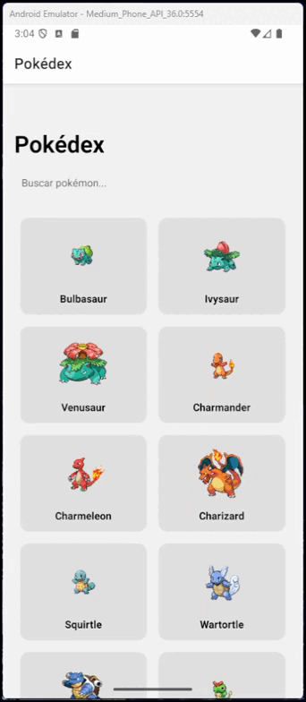

Aula 05 – Navegação e Organização de Aplicações com React Native
Na Aula 04, desenvolvemos uma Pokédex visual e modular, aprendendo a estruturar projetos com React Native + TypeScript, utilizando boas práticas de componentes, tipos e organização de arquivos. Agora, com essa base sólida, vamos expandir nosso projeto e nossos conhecimentos, abordando:
- Navegação entre telas para exibir detalhes de cada Pokémon.
- Utilização da biblioteca
react-navigationpara gerenciar o fluxo entre telas. - Melhores práticas de modularização para projetos em crescimento.
- Uma introdução a visões arquiteturais comuns em aplicativos móveis.
Para isso, vamos partir de onde paramos na aula anterior (PokéDex) e dar continuidade aos conceitos que precisam ser abordados!
1. Introdução à Navegação com React Navigation
Aplicativos móveis raramente se limitam a uma única tela. A capacidade de transitar entre diferentes seções, exibir informações detalhadas ou guiar o usuário por um fluxo de tarefas é fundamental. No universo React Native, uma das bibliotecas mais populares e robustas para gerenciar a navegação é a React Navigation.
Ela oferece diversas estratégias de navegação (pilha, abas, gaveta) e é altamente configurável. Nesta aula, focaremos na navegação em pilha (stack navigation), ideal para cenários onde uma nova tela é colocada sobre a anterior, permitindo ao usuário "voltar" (como ao abrir um item de uma lista para ver seus detalhes).
Antes de começar, é preciso ter o código do exercício da Aula passada. Caso você não o tenha feito, ele pode ser encontrado no link a seguir: Repositório no GitHub - Pokedéx da Aula04
Certique-se de "puxar" a branch Aula04 para sua máquina.
Vamos agora começar a abordar o React Navigation a partir do Desafio 01 da Aula anterior, que solicitava
(1) instalar o pacote @react-navigation/native e suas dependências
específicas do Expo, (2) criar um stack navigator no App.tsx
definindo a tela Pokedex como rota inicial e adicionando a nova rota
PokemonDetails, (3) declarar o tipo RootStackParamList
para garantir que os parâmetros de navegação sejam verificados em tempo de compilação,
(4) implementar a PokemonDetailsScreen para exibir informações detalhadas
do Pokémon selecionado, e (5) transformar cada cartão da lista na Pokédex em um
TouchableOpacity que, ao ser pressionado, chame
navigation.navigate('PokemonDetails', { pokemonId }).
Ao cumprir essas etapas, converteremos nossa aplicação de tela única em um fluxo completo de navegação.
1.1 Instalação das dependências
Para começar, precisamos adicionar a React Navigation e suas dependências ao nosso projeto
PokedexApp (criado na Aula 04). Abra o terminal na raiz do projeto e execute:
npm install @react-navigation/native @react-navigation/native-stack
E também as dependências de suporte:
npx expo install react-native-screens react-native-safe-area-context
Esses pacotes são:
@react-navigation/native: O núcleo da biblioteca.@react-navigation/native-stack: Fornece a navegação em pilha (estilo nativo).react-native-screens: Otimiza o uso de memória para telas nativas.react-native-safe-area-context: A mesma biblioteca que usamos na Aula 04 para lidar com áreas seguras, essencial para a React Navigation.
1.2 Configuração inicial no App.tsx
Com as dependências instaladas, vamos configurar o contêiner de navegação e nossa pilha de telas no
arquivo App.tsx.
Primeiro, precisamos definir os tipos das nossas rotas. Isso garante que estamos passando os parâmetros corretos entre as telas e nos dá um ótimo autocomplete!
Crie um novo arquivo types/Navigation.ts e coloque nele o código a seguir, como mostrado na estrutura abaixo:
PokedexApp/
├─ App.tsx
├─ screens/
│ ├─ PokedexScreen.tsx
│ └─ PokemonDetailsScreen.tsx
└─ types/
└─ Navigation.ts ← aqui fica o código abaixo
E a seguir o Navigation.ts
export type RootStackParamList = {
Pokedex: undefined; // A tela Pokedex não recebe parâmetros
PokemonDetails: { pokemonId: number }; // A tela de detalhes recebe o ID do Pokémon como parâmetro
};
Agora, alteramos o App.tsx:
// App.tsx
import React from 'react';
import { NavigationContainer } from '@react-navigation/native';
import { createNativeStackNavigator } from '@react-navigation/native-stack';
import { SafeAreaProvider } from 'react-native-safe-area-context';
import { PokedexScreen } from './screens/PokedexScreen';
import { PokemonDetailsScreen } from './screens/PokemonDetailsScreen'; // Nova tela
import { RootStackParamList } from './types/Navigation'; // Importando nossos tipos
// Criamos a pilha de navegação com os tipos definidos
const Stack = createNativeStackNavigator<RootStackParamList>();
export default function App() {
return (
<SafeAreaProvider>
<NavigationContainer>
<Stack.Navigator initialRouteName="Pokedex">
<Stack.Screen
name="Pokedex"
component={PokedexScreen}
options={{ title: 'Pokédex' }} // Título da tela na barra de navegação
/>
<Stack.Screen
name="PokemonDetails"
component={PokemonDetailsScreen}
options={{ title: 'Detalhes do Pokémon' }}
/>
</Stack.Navigator>
</NavigationContainer>
</SafeAreaProvider>
);
}
E o que fizemos aqui?
Para entender o código acima, vamos separar a explicação em cinco etapas.
- Importamos
NavigationContainerecreateNativeStackNavigator.
A configuração inicial da navegação no arquivo App.tsx estabelece a fundação para a
transição entre múltiplas telas na aplicação Pokédex. Primeiramente, foi realizada a importação dos
módulos da biblioteca React Navigation: NavigationContainer, que serve como o contêiner
raiz para gerenciar o estado da navegação, e createNativeStackNavigator, uma função que
possibilita a criação de um navegador baseado em pilha, onde novas telas são colocadas sobre as
anteriores, mimetizando o comportamento de navegação nativo das plataformas móveis. Adicionalmente, o
SafeAreaProvider da biblioteca react-native-safe-area-context foi definido
como o componente mais externo para garantir que a interface do usuário respeite as áreas seguras do
dispositivo, como entalhes e barras de sistema, por exemplo.
- Definimos
RootStackParamListpara tipar nossas rotas e seus parâmetros.
Aqui é onde ocorre a definição explícita dos tipos das rotas e seus respectivos parâmetros através da
criação de uma interface TypeScript denominada RootStackParamList. Esta interface,
localizada em types/Navigation.ts, especifica que a rota Pokedex não espera
nenhum parâmetro (undefined), enquanto a rota PokemonDetails requer um
parâmetro obrigatório pokemonId do tipo number. Essa tipagem estática serve
para prevenirmos erros em tempo de execução ao passar dados entre telas, além de habilitar o suporte a
autocompletar e verificações durante o desenvolvimento. Em outras palavras, pense no
RootStackParamList como um “contrato” que diz, para cada tela da
navegação, quais dados ela recebe. Se você tentar abrir PokemonDetails sem
mandar pokemonId, o TypeScript já avisa no editor. Se digitar um id como string
("42") em vez de número, ele avisa também. Em resumo, é só uma forma de “tipar”
as rotas para pegar erros antes mesmo de rodar o app e ainda ganhar autocomplete enquanto programa.
- Criamos uma instância
StackusandocreateNativeStackNavigator<RootStackParamList>().
Com os tipos definidos, uma instância do navegador de pilha, nomeada Stack, foi criada
utilizando createNativeStackNavigator<RootStackParamList>(). Pense nesta função como
uma fábrica que nos entrega os componentes Stack.Navigator e
Stack.Screen para montarmos nossa navegação. Além disso, hooks como useRoute
se tornam automaticamente cientes dos tipos de dados que a tela receberá. Em resumo, essa linha de
código transforma nosso navegador de uma ferramenta genérica para uma estrutura de navegação
especializada e inteligente, que previne uma classe inteira de bugs antes mesmo de rodarmos a aplicação.
- Envolvemos toda a aplicação com
NavigationContainer.
Posteriormente, no componente App, a estrutura de navegação foi efetivamente montada. O
NavigationContainer foi utilizado para envolver toda a lógica de navegação. Dentro dele, o
Stack.Navigator foi empregado para declarar o conjunto de telas que compõem a pilha de
navegação. A propriedade initialRouteName="Pokedex" designou a
PokedexScreen como a tela a ser exibida inicialmente quando o aplicativo é carregado.
- Usamos
Stack.Navigatorpara definir quais telas fazem parte da nossa pilha.initialRouteName="Pokedex": DefinePokedexScreencomo a tela inicial.- Cada
Stack.Screenmapeia um nome de rota para um componente e permite configurar opções, como o título (options={{ title: '...' }}).
Cada tela da pilha foi definida por meio do componente Stack.Screen. Para a rota nomeada
"Pokedex", o componente PokedexScreen (previamente existente) foi
associado, e através da propriedade options, um título "Pokédex" foi configurado
para aparecer na barra de navegação dessa tela. De forma similar, uma nova rota
"PokemonDetails" foi configurada para renderizar o componente
PokemonDetailsScreen (uma nova tela a ser criada), com o título "Detalhes do
Pokémon" especificado para sua barra de navegação. Esse mapeamento entre nomes de rotas,
componentes de tela e opções de apresentação é o que permite ao NavigationContainer
gerenciar qual tela está ativa e como ela deve ser exibida. Com essa estrutura implementada, a nossa
Pokédex evoluiu de uma aplicação de tela única para uma aplicação capaz de apresentar múltiplas
visualizações, especificamente uma lista de Pokémons e uma tela dedicada para os detalhes de um Pokémon
individual!
2. Refatoração da Pokédex com Navegação
Com a infraestrutura de navegação devidamente configurada no aplicativo, o passo subsequente é possibilar
que o usuário transite da tela de listagem de Pokémons (PokedexScreen) para uma tela de
visualização detalhada (PokemonDetailsScreen). Essa interação será disparada pelo toque em
um dos cards de Pokémon exibidos na lista.
2.1 Tornando os Cards Clicáveis e Implementando a Navegação
Para alcançar a interatividade desejada, o componente PokemonCard.tsx será modificado. O
objetivo é que cada card se torne uma área "tocável" que, ao ser pressionada, acione o
mecanismo de navegação para a tela de detalhes do Pokémon correspondente.
Primeiramente, é necessário importar os artefatos essenciais do React Navigation e outros módulos. O hook
useNavigation é fundamental, pois ele provê acesso ao objeto de navegação da pilha (stack)
corrente. Adicionalmente, para garantir a segurança de tipos e o auxílio do TypeScript durante o
desenvolvimento, importamos NativeStackNavigationProp e a nossa definição customizada de
tipos de rota, RootStackParamList. O TouchableOpacity do React Native é
importado para envolver o card, conferindo-lhe a capacidade de resposta ao toque com um feedback visual
de opacidade. Finalmente, a função utilitária capitalize, desenvolvida anteriormente, é
importada para formatar o nome do Pokémon.
// components/PokemonCard.tsx
import React from 'react';
import { View, Text, Image, StyleSheet, TouchableOpacity } from 'react-native';
import { Pokemon } from '../types/Pokemon';
import { useNavigation } from '@react-navigation/native';
import { NativeStackNavigationProp } from '@react-navigation/native-stack';
import { RootStackParamList } from '../types/Navigation';
import { capitalize } from '../utils/format';
interface Props {
pokemon: Pokemon;
}
type PokemonCardNavigationProp = NativeStackNavigationProp<RootStackParamList, 'PokemonDetails'>;
export const PokemonCard = ({ pokemon }: Props) => {
const navigation = useNavigation<PokemonCardNavigationProp>();
const handlePress = () => {
navigation.navigate('PokemonDetails', { pokemonId: pokemon.id });
};
return (
<TouchableOpacity onPress={handlePress} style={styles.touchableCard}>
{/* View interna que mantém a estrutura e estilização visual original do card. */}
<View style={styles.cardInner}>
<Image source={{ uri: pokemon.image }} style={styles.image} />
<Text style={styles.name}>{capitalize(pokemon.name)}</Text>
</View>
</TouchableOpacity>
);
};
const styles = StyleSheet.create({
touchableCard: {
flex: 1,
margin: 8,
},
cardInner: {
backgroundColor: '#e0e0e0',
padding: 12,
borderRadius: 12,
alignItems: 'center',
flex: 1,
},
image: { width: 80, height: 80 },
name: { marginTop: 8, fontWeight: 'bold' },
});
Analisando as mudanças principais de forma mais aprofundada, temos as alterações descritas abaixo.
Primeiro, fizemos a importação de TouchableOpacity de react-native. Lembre-se
que falamos sobre esse componente na aula anterior. 🤓
Também fizemos uso do hook useNavigation, que é invocado dentro do componente funcional
PokemonCard. Este hook, fornecido pela biblioteca React Navigation, retorna o objeto
navigation associado ao navegador mais próximo na árvore de componentes. Este objeto é a
interface primária para disparar ações de navegação, como ir para uma nova tela ou voltar. Essa é uma
novidade que estamos colocando na aplicação e seu uso vai ficar mais claro e intuitivo conforme
prosseguirmos com seu uso na disciplina.
A tipagem do objeto navigation é realizada através de
NativeStackNavigationProp<RootStackParamList, 'PokemonDetails'>. Esta é uma
prática recomendada para garantir a segurança de tipo. RootStackParamList é um mapa que
define todas as rotas da nossa pilha de navegação e os parâmetros que cada rota espera receber (como
vimos na seção acima!). Já ao especificar 'PokemonDetails' como o segundo argumento
genérico, informamos ao TypeScript que, ao usar navigation.navigate para a rota
'PokemonDetails', esperamos (e o autocompletar sugerirá) os parâmetros definidos
para 'PokemonDetails' em RootStackParamList.
Já a função handlePress é definida para encapsular a lógica de navegação. Quando chamada,
ela executa navigation.navigate('PokemonDetails', { pokemonId: pokemon.id }), sendo
que:
-
O primeiro argumento,
'PokemonDetails', é o nome da rota de destino, que deve corresponder exatamente a um dos nomes de tela (Screen) configurados noStackNavigator. -
O segundo argumento,
{ pokemonId: pokemon.id }, é um objeto que representa os parâmetros passados para a tela de destino. A telaPokemonDetailsScreenpoderá então acessarpokemonIdatravés de suasroute.paramspara buscar e exibir as informações detalhadas do Pokémon selecionado, possibilitando a implementação do Desafio!
Estruturalmente, o View que anteriormente representava a totalidade do card agora é
envolvido por um TouchableOpacity. Para que a área tocável corresponda visualmente ao card
e para que os estilos sejam aplicados corretamente, alguns ajustes foram feitos:
* O TouchableOpacity (touchableCard) agora assume a responsabilidade pelo
flex: 1 e pela margin. O flex: 1 é importante se o
PokemonCard for renderizado dentro de um contêiner flexível (como uma FlatList
com numColumns > 1), permitindo que o card se expanda para ocupar o espaço alocado. A
margin provê o espaçamento entre os cards. Basicamente, lógica de estilização para que
nosso aplicativo não quebre!
* Já o View interno (cardInner) retém os estilos visuais como
backgroundColor, padding, borderRadius e alignItems.
É importante notar que cardInner também recebe flex: 1, o que garante que o
conteúdo visual (o View interno) se expanda para preencher completamente as dimensões do
TouchableOpacity pai, assegurando que toda a área visual do card seja, de fato, tocável e
responda à interação do usuário.
Com estas modificações, cada PokemonCard na lista não apenas exibe informações resumidas,
mas também atua como um ponto de entrada interativo para uma visualização mais detalhada, melhorando a
usabilidade da Pokédex e nos permitindo trabalhar com cards interativos.
Agora, claro, temos que criar nossa PokemonDetailsScreen para poder de fato ver as
informações dos Pokémons.
2.2 Criando a Tela de Detalhes (PokemonDetailsScreen.tsx)
Agora, vamos criar o arquivo screens/PokemonDetailsScreen.tsx. Esta tela receberá o
pokemonId como parâmetro, buscará os dados detalhados do Pokémon (poderíamos expandir o
tipo Pokemon ou criar um PokemonDetail com mais campos em uma melhoria
futura!) e os exibirá.
Sabemos que a PokeAPI pode nos dar mais detalhes com base no ID, então vamos refinar nossas
funções em services/api.ts para buscar detalhes por ID.
Primeiro, atualizamos services/api.ts:
// services/api.ts
import axios from 'axios';
import { Pokemon, PokemonListItem } from '../types/Pokemon'; //
const API_BASE = 'https://pokeapi.co/api/v2'; //
export async function getPokemons(limit: number): Promise<PokemonListItem[]> {
const res = await axios.get(`${API_BASE}/pokemon?limit=${limit}`);
return res.data.results;
}
export async function getPokemonDetails(url: string): Promise<Pokemon> {
const res = await axios.get(url);
return {
id: res.data.id,
name: res.data.name,
image: res.data.sprites.front_default,
types: res.data.types.map((t: any) => t.type.name),
};
}
export async function getPokemonById(id: number): Promise<Pokemon> {
const res = await axios.get(`${API_BASE}/pokemon/${id}`);
return {
id: res.data.id,
name: res.data.name,
image: res.data.sprites.front_default,
types: res.data.types.map((t: any) => t.type.name),
// Aqui poderíamos buscar e mostrar dados opcionais, customizando nosso tipo Pokemon.
// Por exemplo, poderíamos buscar:
// height: res.data.height,
// weight: res.data.weight,
// abilities: res.data.abilities.map((a: any) => a.ability.name),
};
}
Agora sim, implementamos nossa PokemonDetailsScreen.tsx:
// screens/PokemonDetailsScreen.tsx
import React, { useEffect, useState } from 'react';
import { View, Text, Image, StyleSheet, ActivityIndicator, ScrollView } from 'react-native';
import { RouteProp, useRoute } from '@react-navigation/native';
import { RootStackParamList } from '../types/Navigation';
import { Pokemon } from '../types/Pokemon';
import { getPokemonById } from '../services/api';
import { capitalize } from '../utils/format'; //
// Tipo para a propriedade route da nossa tela específica
type PokemonDetailsScreenRouteProp = RouteProp<RootStackParamList, 'PokemonDetails'>;
export const PokemonDetailsScreen = () => {
const route = useRoute<PokemonDetailsScreenRouteProp>();
const { pokemonId } = route.params;
const [pokemon, setPokemon] = useState<Pokemon | null>(null);
const [isLoading, setIsLoading] = useState(true);
const [error, setError] = useState<string | null>(null);
useEffect(() => {
const fetchDetails = async () => {
try {
setIsLoading(true);
setError(null);
const details = await getPokemonById(pokemonId);
setPokemon(details);
} catch (err) {
setError('Falha ao carregar detalhes do Pokémon.');
console.error(err);
} finally {
setIsLoading(false);
}
};
fetchDetails();
}, [pokemonId]);
if (isLoading) {
return <ActivityIndicator size="large" style={styles.centered} />;
}
if (error) {
return <Text style={styles.errorText}>{error}</Text>;
}
if (!pokemon) {
return <Text style={styles.centered}>Pokémon não encontrado.</Text>;
}
return (
<ScrollView contentContainerStyle={styles.container}>
<Image source={{ uri: pokemon.image }} style={styles.image} />
<Text style={styles.name}>{capitalize(pokemon.name)}</Text>
<Text style={styles.idText}>ID: #{pokemon.id}</Text>
<View style={styles.typesContainer}>
<Text style={styles.sectionTitle}>Tipos:</Text>
{pokemon.types.map((type) => (
<Text key={type} style={styles.typeText}>{capitalize(type)}</Text>
))}
</View>
</ScrollView>
);
};
const styles = StyleSheet.create({
container: {
padding: 20,
alignItems: 'center',
},
centered: {
flex: 1,
justifyContent: 'center',
alignItems: 'center',
},
errorText: {
flex: 1,
justifyContent: 'center',
alignItems: 'center',
color: 'red',
fontSize: 16,
},
image: {
width: 200,
height: 200,
marginBottom: 16,
backgroundColor: '#f0f0f0',
borderRadius: 100,
},
name: {
fontSize: 28,
fontWeight: 'bold',
marginBottom: 8,
},
idText: {
fontSize: 16,
color: '#666',
marginBottom: 16,
},
typesContainer: {
marginBottom: 16,
alignItems: 'center',
},
sectionTitle: {
fontSize: 20,
fontWeight: '600',
marginBottom: 8,
},
typeText: {
fontSize: 16,
marginHorizontal: 4,
paddingVertical: 4,
paddingHorizontal: 8,
backgroundColor: '#ddd',
borderRadius: 4,
marginBottom: 4,
},
detailsSection: {
marginTop: 16,
alignItems: 'flex-start',
width: '100%',
}
});
Nessa implementação nós:
- Usamos
useRoute<PokemonDetailsScreenRouteProp>()para acessar os parâmetros passados para esta tela. route.params.pokemonIdnos dá o ID do Pokémon.- O
useEffectbusca os detalhes do Pokémon usandogetPokemonByIdquando o componente é montado ou opokemonIdmuda. - Incluímos estados para
isLoadingeerrorpara uma melhor experiência do usuário. - Renderizamos os detalhes básicos do Pokémon. O
ScrollViewé usado caso o conteúdo exceda a altura da tela.
Agora, ao tocar em um Pokémon na PokedexScreen, o usuário será levado para
PokemonDetailsScreen, que exibirá mais informações sobre o Pokémon selecionado! ✨
Abaixo a demonstração de como está nossa Pokédex nesse estágio de implementação:

Repare que ainda precisamos terminar a implementação das funcionalidades pedidas na Aula 04. Você conseguiu implementá-las? 🤓
O mais difícil era o Desafio que acabamos de implementar! Então caso não tenha conseguido, tente, agora a partir do código fornecido acima, fazer as implementações das melhorias pedidas nos exercícios 1 a 4 da aula anterior. Irei gravar um vídeo que será disponibilizado no Moodle mostrando a implementação completa (e o código-fonte será disponibilizado), mas tente fazer os exercícios pois a prática é o que leva ao entendimento concreto do que estamos fazendo!
Dito isso, vamos prosseguir para um tema importante que ainda não abordamos de maneira suficiente até aqui: arquitetura e modularização de nossas aplicações mobile.
3. Modularização e Boas Práticas
Conforme o projeto cresce, manter uma estrutura organizada é importante para a manutenibilidade e escalabilidade. Já iniciamos essa organização por meio de diretórios, mas é necessário entender como avançar nesse sentido.
Podemos citar como boas práticas: a Separação de Componentes, o uso de uma Camada de Serviço, a definição de Funções Utilitárias e definição de Tipos Globais.
Nesse sentido, à medida que a aplicação cresce, precisamos reforçar a organização para garantir
manutenção e escala. Em nossa implementação, continuamos separando componentes de interface
reutilizáveis (como o PokemonCard) dentro de src/components,
enquanto telas completas — PokedexScreen,
PokemonDetailsScreen — permanecem em src/screens. Se uma tela ficar muito
carregada, podemos dividi-la em subcomponentes, que podem "morar" numa subpasta própria dessa
tela (exemplo: src/screens/Pokedex/components) ou, se forem realmente genéricos, subir para
src/components. Um bom exemplo seria transformar a seção de detalhes do Pokémon em um
PokemonDetailsView independente!
Além disso, nossa comunicação com serviços externos continua centralizada em
services/api.ts. Sempre que precisarmos de novos dados, criamos ali
funções que devolvem Promise com tipos definidos — por exemplo
Promise<Pokemon[]> ou Promise<PokemonDetailed> — o que impede
surpresas em tempo de execução. Funções utilitárias puras, como capitalize, ficam em
utils/format.ts; esse arquivo também é o melhor lugar para futuras
formatações de datas, números ou outras strings.
Por fim, todo o contrato de tipos continua em src/types. Lá já temos
Navigation.ts, que descreve rotas e parâmetros; qualquer novo modelo global, como um futuro
PokemonDetailed, deve ser criado na mesma pasta para manter o autocompletar e as
verificações de tempo de compilação funcionando em todo o projeto.
Seguir essa divisão — componentes reaproveitáveis, telas, serviços, utilitários e tipos globais — garante um código modular, facilita o trabalho em equipe e torna as próximas funcionalidades mais fáceis de integrar. Isso contudo, diz respeito à decisões de "baixo nível", ao Design concreto da nossa aplicação. Vamos ver agora como proceder em relação às decisões de alto nível: a arquitetura de nossa aplicação!
4. Arquiteturas Comuns em Aplicativos Móveis
Além dessa questão de organização em diretórios, temos, até agora, construído nossa aplicação de forma intuitiva, focando na componentização e na separação de responsabilidades (UI, serviços, tipos). À medida que os aplicativos se tornam maiores e mais complexos, contudo, pensar em padrões de arquitetura pode ajudar a gerenciar essa complexidade, melhorar a testabilidade e a manutenibilidade.
Quando falamos em padrões de arquitetura estamos descrevendo receitas reconhecidas pela comunidade para organizar o código de uma aplicação. Eles surgiram depois de muitos projetos repetirem os mesmos problemas (acoplamento excessivo, telas com “código-espaguete”, testes difíceis etc) e perceberem que determinadas divisões de responsabilidade funcionavam melhor. Esses padrões não são bibliotecas nem frameworks: são modelos mentais que dizem “coloque esta parte dos dados aqui, aquela parte da interface ali, e deixe a ponte entre as duas em outro lugar”. Por fornecerem um “esqueleto”, reduzem discussões sobre estrutura, evitam reinventar a roda e deixam claro onde cada novo pedaço de lógica deve entrar.
Vamos dar uma olhada rápida em alguns padrões arquiteturais comuns em aplicativos móveis e como eles podem se relacionar com o React Native.
4.1 O que são Padrões de Arquitetura?
Como mencionamos, padrões de arquitetura oferecem uma estrutura organizacional para o código, garantindo que as responsabilidades — como regras de negócio, lógica de apresentação e a interface do usuário (UI) — sejam claramente separadas.
Vamos explorar três dos padrões mais influentes no desenvolvimento de aplicações mobile: MVC, MVP e MVVM.
MVC (Model-View-Controller)
O MVC é um dos padrões mais antigos e fundamentais, estabelecendo a base para a separação de responsabilidades.
-
Conceito Central: A interação do usuário na View é capturada pelo Controller, que aciona atualizações no Model. As mudanças no Model, por sua vez, notificam a View para que ela se atualize e exiba os novos dados.
-
Responsabilidades dos Componentes:
- Model: Representa o coração da aplicação. Contém os dados (ex: uma lista de Pokémons), as regras de negócio (ex: validações, cálculos) e a lógica de acesso a dados (ex: chamadas de API). O Model é completamente independente da UI.
- View: É a camada de apresentação visual. Sua única função é exibir os dados fornecidos pelo Model e encaminhar as ações do usuário (cliques, digitação) para o Controller. Idealmente, não possui lógica de negócio.
- Controller: Atua como o intermediário. Ele recebe as entradas do usuário a partir da View, processa-as (invocando a lógica de negócio no Model) e, por fim, seleciona qual View deve ser renderizada em resposta.
Nesse sentido, o Fluxo de Interação seria algo como:
1. O usuário digita uma String no campo de busca na tela (View).
2. A View (o componente React Native) não filtra a lista diretamente. Ela invoca uma função
do Controller.
3. O Controller recebe a chamada, interage com o Model para solicitar a
filtragem dos dados.
4. O Model retorna a lista filtrada para o Controller.
5. O Controller então passa essa lista de volta para a View, que simplesmente
a renderiza.
Em frameworks modernos como o React, a distinção entre View e Controller muitas vezes se torna turva. Um
componente React (por exemplo, nossa PokedexScreen.tsx) frequentemente contém tanto a
marcação JSX (View) quanto os manipuladores de eventos e a lógica de estado
(useEffect, useState), que são papéis do Controller. Isso pode
levar ao famoso problema do "Massive View-Controller", onde o componente se
torna gigantesco, complexo e difícil de testar, pois a lógica de apresentação está fortemente acoplada
ao framework de renderização.
Portanto, o uso do MVC em aplicações Mobile com React Native é ideal para projetos pequenos, protótipos rápidos ou cenários onde a simplicidade e a velocidade de desenvolvimento inicial são mais importantes que a testabilidade rigorosa.
MVP (Model-View-Presenter)
Já o MVP surgiu como uma evolução do MVC, com o objetivo principal de resolver o problema do acoplamento entre a View e o Controller, aumentando a testabilidade.
O conceito central é que a lógica de apresentação é movida do Controller para uma nova camada chamada Presenter. O Presenter se comunica com a View através de uma interface (contrato), tornando a View completamente "burra".
Isso pode parecer contraintuitivo: afinal, a View não é a camada de apresentação? A chave para entender o
MVP está em diferenciar "Lógica de Apresentação" de "Lógica de
Renderização". A View fica responsável apenas pela Lógica de
Renderização: ela sabe como desenhar componentes na tela (botões, listas), aplicar
estilos e capturar eventos brutos do usuário (onClick, onChangeText). Ela é o
"o quê" e o "como" da parte visual.
Já a "Lógica de Apresentação", que é a responsabilidade do
Presenter, é a camada de decisão que responde ao "porquê" e ao
"quando". Isso inclui gerenciar o estado da UI (decidir quando mostrar um
loading), formatar dados para exibição (transformar um objeto Date em uma
string "10/06/2025") e aplicar regras condicionais (decidir se um botão de 'Salvar'
deve estar habilitado ou desabilitado). Em suma, o Presenter é o cérebro que orquestra a cena, enquanto
a View é o palco que apenas exibe o que o cérebro comanda. Ao mover essa camada de decisão para uma
classe pura, a testamos de forma isolada, sem depender de renderização.
Nesse âmbito, as responsabilidades dos componentes passam a ser:
- Model: Permanece o mesmo do MVC, contendo dados e regras de negócio.
- View: Torna-se uma camada passiva. Ela implementa uma interface definida pelo Presenter e sua única tarefa é chamar os métodos do Presenter em resposta a eventos de UI e renderizar os dados que o Presenter lhe entrega. Ela não toma decisões.
- Presenter: Orquestra tudo. Ele busca dados do Model, aplica a lógica de
apresentação (formatação de datas, textos, etc.) e invoca métodos na View (via interface) para
atualizar a UI (ex:
view.showLoading(),view.displayPokemons(...)). Como o Presenter depende de uma abstração (IView) e não de uma implementação concreta, ele pode ser testado em total isolamento, sem a necessidade de renderizar um único pixel.
Se estivéssemos falando da nossa Pokédex, o fluxo de interação seria algo como:
- A
PokedexScreen(View) é criada e instancia oPokedexPresenter, passando a si mesma como a implementação da interfaceIPokedexView. - O usuário digita "Charizard" no campo de busca. A
Viewnão faz nada além de notificar o Presenter:presenter.onSearchQueryChanged('Charizard'). - O
Presenterrecebe a chamada, pede aoModela lista de Pokémons filtrada. - O
Modelretorna os dados brutos. - O
Presenterformata esses dados (ex: capitaliza os nomes) e chama os métodos da interface implementada pela View:view.showLoading(),view.displayFilteredPokemons(formattedData),view.hideLoading(). - A
Viewsimplesmente obedece a essas chamadas, atualizando seu estado interno para re-renderizar.
O uso ideal para essa arquitetura se dá em aplicações corporativas onde a testabilidade unitária da lógica de apresentação é um fator de grande importância, pois permite que as regras de UI sejam validadas independentemente do framework visual, facilitando a manutenção e a migração de plataforma.
MVVM (Model-View-ViewModel)
Já o MVVM é o padrão mais moderno dos três, projetado para se beneficiar de frameworks que suportam Data Binding (vinculação de dados), como é o caso do React com Hooks. 😊
O conceito central desse padrão é o ViewModel, que expõe dados e comandos aos quais a View se "conecta" (bind). Quando os dados no ViewModel mudam, a View reage e se atualiza automaticamente, sem a necessidade de intervenção explícita como no MVP.
Nesse sentido, a responsabilidades dos componentes passa a ser:
* Model: Sem alterações, continua responsável pelos dados e regras de negócio.
* View: A camada visual. Ela é responsável por sua própria lógica de UI (animações,
transições) e se conecta (binds) às propriedades e comandos expostos pelo ViewModel. A comunicação é
majoritariamente declarativa.
* ViewModel: É o intermediário que prepara e expõe os dados do Model para a View de uma
forma que ela possa consumir facilmente. Ele não tem nenhuma referência à View. Em vez disso, ele expõe
propriedades observáveis (como estados do React) e comandos (funções
que a View pode invocar). Qualquer lógica de apresentação ou estado da UI (como isLoading,
errorMessage) vive aqui.
O fluxo de interação na nossa Pokédex seria algo como:
1. O componente PokedexScreen (View) utiliza um hook customizado:
const { list, isLoading, searchQuery, setSearchQuery } = usePokedexViewModel();. Fiquem
tranquilos: ainda abordaremos os hooks customizados.
2. A View "amarra" (binds) seus elementos a essas propriedades: um FlatList
renderiza a list, um ActivityIndicator é exibido quando isLoading
é true, e o TextInput tem seu valor vinculado a searchQuery e seu
onChangeText ao setSearchQuery.
3. Quando o usuário digita, o onChangeText invoca setSearchQuery.
4. Dentro do usePokedexViewModel, a alteração em searchQuery dispara um
useEffect que executa a lógica de filtragem, busca novos dados e atualiza os estados
list e isLoading.
5. Como a View está "observando" list e isLoading, o
React a re-renderiza automaticamente para refletir o novo estado: ou seja, a View não precisou ser
informada explicitamente!
Esse padrão de arquitetura é ideal para aplicações ricas em interatividade e com muitos estados de UI. É o padrão mais alinhado com a filosofia de frameworks reativos como React, Vue e Angular, promovendo um código declarativo, reutilizável (o mesmo ViewModel pode ser usado por múltiplas Views) e testável.
Tabela Comparativa
| Característica | MVC (Model-View-Controller) | MVP (Model-View-Presenter) | MVVM (Model-View-ViewModel) |
|---|---|---|---|
| Acoplamento View-Lógica | Alto (View e Controller são interdependentes) | Baixo ( desacoplados via interface/contrato) | Muito Baixo (desacoplados via data binding) |
| Lógica de Apresentação | No Controller, frequentemente misturada na View. | No Presenter. | No ViewModel. |
| Referência da Lógica para a View | O Controller manipula diretamente a View. | O Presenter possui uma referência à View (via interface). | O ViewModel não tem nenhuma referência à View. |
| Testabilidade | Moderada (difícil testar a UI) | Alta (Presenter é 100% testável) | Altíssima (ViewModel é 100% testável) |
| Mecanismo de Comunicação | Chamadas de método diretas. | Métodos definidos em um contrato (interface). | Data Binding e Comandos. |
E qual Padrão Escolher?
A escolha não é sobre qual é o "melhor", mas qual é o mais adequado para o seu contexto:
- Use MVC para começar rápido, em projetos simples ou provas de conceito, onde a estrutura formal pode ser um exagero.
- Adote MVP quando a testabilidade rigorosa da lógica de apresentação é um requisito inegociável e você precisa de uma separação clara, mas ainda não está em um ecossistema totalmente reativo.
- Prefira MVVM quando sua aplicação é construída sobre um framework reativo (como React Native, que estamos utilizando!), possui múltiplos estados de UI que precisam ser gerenciados e compartilhados, e a equipe busca um código declarativo e com alta capacidade de reuso.
Independentemente da escolha, o princípio fundamental prevalece: o Model encapsula os dados e as regras, a View exibe o que recebe, e uma camada intermediária bem definida orquestra a comunicação. Essa disciplina garante que sua aplicação possa evoluir de forma organizada, robusta e preparada para o futuro.
Lembre-se: não existe "bala de prata". A escolha depende do tamanho da equipe, da complexidade do projeto e da familiaridade da equipe com os padrões. Para muitos projetos React Native, uma arquitetura baseada em componentes, com lógica de apresentação em Custom Hooks e serviços bem definidos para o Model, oferece um bom equilíbrio de simplicidade, testabilidade e escalabilidade, incorporando princípios do MVVM.
O importante é sempre buscar:
- Separação de Responsabilidades (SoC): Cada parte do código tem um papel claro.
- Testabilidade: Conseguir testar a lógica de negócios e de apresentação independentemente da UI.
- Manutenibilidade: Facilitar a compreensão, modificação e extensão do código.
Nossa Pokédex, mesmo sem aderir rigidamente a um desses padrões formais, já aplica o princípio da separação de responsabilidades ao ter componentes de UI, uma camada de serviço para dados e tipos definidos. Conforme ela evoluir, poderemos introduzir Custom Hooks e outras técnicas para aprimorar ainda mais sua estrutura e refatorá-la, eventualmente, para um desses padrões!
5. Conclusão
Nesta aula, nossa Pokédex deu um salto de qualidade, evoluindo de uma aplicação de tela única para um
sistema de navegação interativo. A implementação da navegação com react-navigation não foi
apenas um exercício técnico; foi o catalisador que nos forçou a pensar sobre como gerenciar a
complexidade à medida que um aplicativo cresce.
Partimos da necessidade de exibir detalhes de um Pokémon e, no processo, aprendemos a:
- Estruturar a navegação em pilha, um dos fluxos mais comuns em aplicativos móveis.
- Tipar nossas rotas e parâmetros com
RootStackParamList, garantindo segurança e previsibilidade ao passar dados entre telas. - Transformar componentes estáticos em interativos, fazendo com que o
PokemonCardse tornasse um ponto de entrada para uma nova experiência. - Organizar a lógica de busca de dados, expandindo nossa camada de serviço
(
api.ts) para lidar com novas requisições de forma limpa e isolada.
Também tivemos uma introdução aos padrões de arquitetura, ferramentas conceituais para guiar nossas decisões, e entendemos que a escolha não é sobre encontrar a "bala de prata", mas sim sobre aplicar princípios sólidos de separação de responsabilidades, testabilidade e manutenibilidade para construir software robusto e manutenível.
Com essa base arquitetural e uma aplicação que já navega e busca dados de forma organizada, estamos preparados para os próximos desafios, seja gerenciando um estado global (como uma lista de Pokémons favoritos que funcione em todo o app), otimizando o desempenho com interações mais avançadas ou persistindo dados localmente para uso offline, as fundações que construímos aqui serão essenciais (Já sabe o que vamos ver nas próximas aulas, né? 🤩)
E, como já sabem, agora é hora dos nossos...
6. Exercícios
Exercício 1: Análise Crítica da Arquitetura Atual
Avalie a estrutura de código existente da Pokédex, de forma a identificar pontos fortes e fracos, e
praticar a habilidade de ler e analisar criticamente uma base de código. Caso você não tenha conseguido
fazer os exercícios da Aula04, faça o checkout para o branch Aula05 do projeto da Pokédex,
disponível em Repositório no GitHub –
PokedexApp, que contém a implementação completa da navegação e dos exercícios da aula anterior.
Dedique um tempo para navegar por todos os arquivos e diretórios (screens,
components, services, types, utils). Após analisar o
projeto, crie um documento de texto ou markdown chamado ANALISE_ARQUITETURA.md e responda
às seguintes questões de forma detalhada:
-
Estrutura de Diretórios: A organização atual dos arquivos em
screens,components,services, etc., é clara para você? Você mudaria algum arquivo de lugar? Por quê? -
Componentização: O
PokemonCardé um bom exemplo de componente reutilizável? Analise a telaPokemonDetailsScreen. Que partes dela você extrairia para um novo componente reutilizável para manter a tela mais limpa? -
Gerenciamento de Estado e Lógica:
- Observe a
PokedexScreen. Onde a lógica de busca e filtragem de dados está localizada? - Observe a
PokemonDetailsScreen. Onde está a lógica para buscar os detalhes de um Pokémon específico? - Você considera essa abordagem (lógica de estado e de dados dentro dos componentes de tela) sustentável para um aplicativo que continua crescendo? Quais são os prós e contras que você observa?
- Observe a
-
Pontos Fortes e Fracos: Baseado em sua análise, liste pelo menos dois pontos fortes (o que foi bem feito) e dois pontos fracos (o que poderia ser melhorado) na arquitetura atual da aplicação. Justifique cada ponto.
Caso você tenha conseguido fazer a implementação dos exercícios, faça essa análise crítica com base no repositório que você submeteu como entrega da Aula04.
Exercício 2: Proposta de Refatoração para MVP ou MVVM
Aqui a ideia é aplicar os conhecimentos teóricos sobre os padrões de arquitetura MVP e MVVM, planejando uma refatoração estrutural da Pokédex sem, necessariamente, implementá-la por completo.
Para isso, escolha um dos padrões de arquitetura a seguir para a Pokédex:
MVP ou MVVM. Com base na sua escolha, crie um documento de texto ou
markdown chamado PROPOSTA_REFATORACAO.md e descreva como você reestruturaria a tela
PokedexScreen. Sua proposta deve incluir:
-
Padrão Escolhido: Declare qual padrão você escolheu (MVP ou MVVM) e justifique brevemente por que o considera uma boa opção para este aplicativo.
-
Nova Estrutura de Arquivos: Desenhe a nova estrutura de diretórios para a tela da Pokédex. Mostre onde os novos arquivos (como
PokedexPresenter.tsouusePokedexViewModel.ts) estariam localizados.
Por exemplo:
PokedexApp/
├─ screens/
│ └─ Pokedex/
│ ├─ PokedexScreen.tsx (View)
│ ├─ PokedexPresenter.ts (Presenter)
│ └─ IPokedexView.ts (Contrato/Interface)
...
-
Divisão de Responsabilidades: Para a tela
PokedexScreen, descreva claramente:-
(Se MVP) O que ficaria na
View(PokedexScreen.tsx)? Quais métodos oPresenterchamaria nela (defina a interfaceIPokedexView)? -
(Se MVP) O que ficaria no
Presenter? Quais lógicas (busca de dados, filtro, formatação) ele conteria? -
(Se MVVM) O que ficaria na
View(PokedexScreen.tsx)? Como ela consumiria oViewModel? -
(Se MVVM) O que ficaria no
ViewModel(ex:usePokedexViewModel)? Quais estados (list,isLoading) e funções (setSearchQuery) ele exporia?
-
-
Fluxo de Dados: Descreva em texto ou com um diagrama simples o fluxo de uma interação do usuário. Por exemplo: "O que acontece passo a passo quando o usuário digita no campo de busca na nova arquitetura?".
Exemplo de passo a passo para MVVM:
> 1. Usuário digita na TextInput da View.
> 2. O onChangeText da View chama a função setSearchQuery
exposta pelo ViewModel.
> 3. Dentro do ViewModel, a mudança no estado de busca dispara um useEffect
que...
> 4. ... etc.
Este exercício não exige a implementação do código, mas sim o planejamento e a documentação da arquitetura, que é uma habilidade importante para qualquer desenvolvedor. 🧠
"Pô, professor, pra que eu preciso saber disso?"
As inteligências artificiais ‘programam’ cada vez melhor. O nosso diferencial está em analisar criticamente as decisões de design e arquitetura, entendendo "o que" deve ser feito e "por quê". Saber apenas "como" implementar não basta, por isso precisamos exercitar o raciocínio crítico desde cedo!